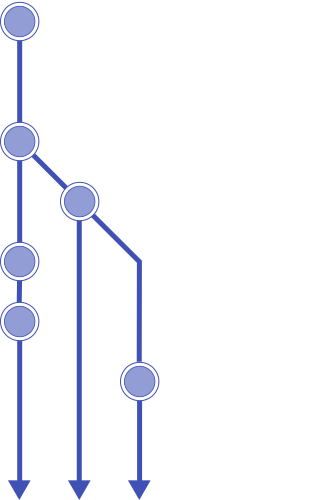

<dom-module id="sd-timeline">
	<link rel="import" type="css" href="timeline.css">
	<link rel="import" href="../bower_components/paper-material/paper-material.html">
	<template>
		<div class="container">
			
			<div class="items">
				<template is="dom-repeat" items="{{ _items }}">
					<paper-material style$="{{ _getItemStyle(index) }}"
						class="item layout horizontal">
						<div class="left">
							<div class="year">{{ item.year }}</div>
						</div>
						<div class="right layout vertical flex">
							<div class="title flex">{{ item.title }}</div>
							<div class="subtitle flex">{{ item.subtitle }}</div>
						</div>
					</paper-material>
				</template>
			</div>
			<div style="clear: both"></div>
		</div>
	</template>
</dom-module>
